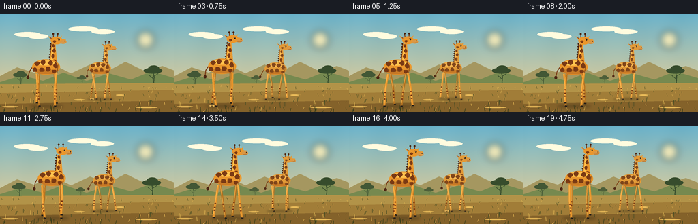
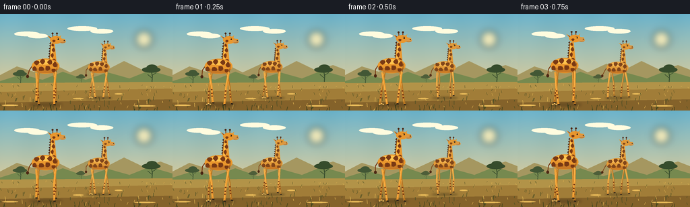

CODING AGENTS AS PIXEL WORLD MODELS
traex/GPT-5.6-Sol · instance_preservation_0011
点击播放 · 原生 RGB 像素
逐轮保存的候选
回放视频、检查图与代码变化。
每份候选均可单独播放。实际图片检查记录在下方工具轨迹中。
候选 01播放与检查图
点击播放 · 原生 RGB 像素


展开代码变化
--- 上一保存版本
+++ 本次保存版本
@@ -0,0 +1,222 @@
+from pathlib import Path
+import math
+import numpy as np
+from PIL import Image, ImageDraw, ImageFilter
+import artifact_io
+
+CASE_DIR = Path(__file__).resolve().parent
+W, H, N, FPS = 256, 144, 20, 4.0
+SS = 4
+
+def P(v): return int(round(v * SS))
+def pts(seq): return [(P(x), P(y)) for x, y in seq]
+
+def ellipse(d, box, fill, outline=None, width=1):
+ d.ellipse(tuple(P(v) for v in box), fill=fill, outline=outline, width=P(width) if outline else 1)
+
+def polygon(d, xy, fill): d.polygon(pts(xy), fill=fill)
+def line(d, xy, fill, width, joint='curve'): d.line(pts(xy), fill=fill, width=max(1,P(width)), joint=joint)
+
+def gradient_background(frame_idx):
+ h, w = H*SS, W*SS
+ y = np.linspace(0, 1, h)[:, None, None]
+ top = np.array([105, 177, 205], dtype=float)[None,None,:]
+ horizon = np.array([250, 211, 142], dtype=float)[None,None,:]
+ arr = top*(1-y) + horizon*y
+ arr = np.repeat(arr, w, axis=1)
+ # very subtle fixed texture, not frame-to-frame noise
+ xx = np.arange(w)[None, :, None]
+ yy = np.arange(h)[:, None, None]
+ texture = 1.4*np.sin(xx/39.0) + 0.8*np.sin((xx+yy)/83.0)
+ arr = np.clip(arr + texture, 0, 255).astype(np.uint8)
+ return Image.fromarray(arr, 'RGB').convert('RGBA')
+
+def draw_background(im, f):
+ d = ImageDraw.Draw(im, 'RGBA')
+ # hazy sun and thin clouds
+ glow = Image.new('RGBA', im.size, (0,0,0,0)); gd = ImageDraw.Draw(glow, 'RGBA')
+ ellipse(gd, (198, 22, 229, 53), (255,226,151,35))
+ ellipse(gd, (204, 28, 223, 47), (255,241,190,210))
+ glow = glow.filter(ImageFilter.GaussianBlur(P(5)))
+ im.alpha_composite(glow)
+ d = ImageDraw.Draw(im, 'RGBA')
+ cloud_shift = -f*0.10
+ for cx, cy, rx, a in [(40,29,19,23),(56,32,15,18),(122,21,22,14),(151,25,17,12)]:
+ ellipse(d, (cx-rx+cloud_shift,cy-3,cx+rx+cloud_shift,cy+4), (255,248,226,a))
+ # atmospheric distant ridges
+ polygon(d, [(0,91),(25,78),(50,86),(76,73),(104,87),(132,74),(157,84),(184,70),(213,84),(238,76),(256,83),(256,111),(0,111)], (160,151,100,78))
+ polygon(d, [(0,100),(32,90),(63,98),(93,86),(127,98),(160,87),(192,96),(222,84),(256,94),(256,115),(0,115)], (116,137,83,120))
+ # far acacias; parallax drift is tiny
+ drift = -f*0.18
+ def acacia(x,y,s,col):
+ x += drift
+ line(d, [(x,y),(x+1,y-18*s),(x-1,y-29*s)], col, 1.4*s)
+ line(d, [(x,y-15*s),(x-7*s,y-21*s)], col, 0.8*s)
+ line(d, [(x,y-19*s),(x+8*s,y-24*s)], col, 0.8*s)
+ ellipse(d, (x-17*s,y-34*s,x+15*s,y-24*s), col)
+ ellipse(d, (x-9*s,y-38*s,x+10*s,y-27*s), col)
+ acacia(30,108,.65,(67,89,57,175)); acacia(225,108,.86,(56,78,48,190))
+ acacia(120,106,.42,(78,96,61,135))
+ # ground bands
+ polygon(d, [(0,103),(256,101),(256,144),(0,144)], (173,147,76,255))
+ polygon(d, [(0,116),(256,111),(256,144),(0,144)], (157,126,60,255))
+ polygon(d, [(0,132),(256,127),(256,144),(0,144)], (129,99,46,255))
+ # terrain texture and grass (fixed positions)
+ rng = np.random.default_rng(421)
+ for i in range(110):
+ x = float(rng.uniform(0,256)); y0 = float(rng.uniform(106,144))
+ hh = float(rng.uniform(1.5,5.5) * (0.5 + (y0-103)/41))
+ col = (77,81,40,int(rng.integers(75,145))) if i%3 else (214,177,85,130)
+ sl = float(rng.uniform(-2,2))
+ line(d, [(x,y0),(x+sl,y0-hh)], col, .45 if y0<126 else .7)
+ # pale track/ground marks
+ for x,y0,rx in [(15,136,12),(116,126,8),(215,137,16),(176,119,6)]:
+ ellipse(d,(x-rx,y0-1,x+rx,y0+1),(224,185,93,38))
+
+def blob(d, cx, cy, rx, ry, color, seed_phase=0):
+ xy=[]
+ for k in range(8):
+ a=2*math.pi*k/8
+ wob=1+0.14*math.sin(k*2.7+seed_phase)
+ xy.append((cx+rx*wob*math.cos(a), cy+ry*wob*math.sin(a)))
+ polygon(d,xy,color)
+
+def draw_leg(d, hipx, hipy, ground, sc, gait, base, spots, hoof, far=False):
+ # A long, jointed limb. Foot lifts only on swing half, maintaining convincing contact otherwise.
+ stride = 8.2*sc*math.sin(gait)
+ swing = max(0.0, math.cos(gait))
+ lift = 5.2*sc*(swing**1.5)
+ footx = hipx + stride
+ footy = ground - lift
+ kneex = hipx + stride*0.30 + 2.2*sc*math.sin(gait+0.65)
+ kneey = hipy + (footy-hipy)*0.47 - 1.8*sc*swing
+ anklex = footx - 1.0*sc*math.sin(gait)
+ ankley = footy - 5.0*sc
+ c = tuple(max(0,int(q*0.78)) for q in base[:3])+(base[3],) if far else base
+ line(d, [(hipx,hipy),(kneex,kneey),(anklex,ankley),(footx,footy)], c, 3.4*sc)
+ # sunward edge
+ line(d, [(hipx-.55*sc,hipy),(kneex-.5*sc,kneey),(anklex-.35*sc,ankley)], (255,205,106,75), .65*sc)
+ # lower-leg markings
+ for q in (0.25,0.52,0.73):
+ ax = kneex+(anklex-kneex)*q; ay=kneey+(ankley-kneey)*q
+ ellipse(d,(ax-1.35*sc,ay-1.0*sc,ax+1.35*sc,ay+1.0*sc),spots)
+ # black cloven hoof, laid along direction of travel
+ line(d, [(footx-1.0*sc,footy-.25*sc),(footx+2.4*sc,footy+.15*sc)], hoof, 2.2*sc)
+
+def draw_giraffe(im, x, ground, sc, phase, palette, identity=0):
+ d=ImageDraw.Draw(im,'RGBA')
+ gold, light, dark, mane, hoof = palette
+ bob = 0.9*sc*math.sin(phase*2.0+0.4)
+ gy = ground + bob
+ # contact shadow and a few dust motes during push-off
+ shadow_layer=Image.new('RGBA',im.size,(0,0,0,0)); sd=ImageDraw.Draw(shadow_layer,'RGBA')
+ ellipse(sd,(x-27*sc,ground-2.0*sc,x+27*sc,ground+2.5*sc),(56,45,26,92))
+ shadow_layer=shadow_layer.filter(ImageFilter.GaussianBlur(P(2.2*sc)))
+ im.alpha_composite(shadow_layer); d=ImageDraw.Draw(im,'RGBA')
+
+ # hind/far legs first (four independently phased limbs)
+ hipy=gy-52*sc
+ draw_leg(d,x-12*sc,hipy,ground,sc,phase+math.pi,gold,dark,hoof,True)
+ draw_leg(d,x+13*sc,hipy-1*sc,ground,sc,phase+0.35,gold,dark,hoof,True)
+
+ # tail, swaying opposite the neck
+ tx=x-21*sc; ty=gy-66*sc
+ tail_end=(x-30*sc+3*sc*math.sin(phase),gy-47*sc)
+ line(d,[(tx,ty),(x-27*sc,gy-57*sc),tail_end],dark,1.35*sc)
+ ellipse(d,(tail_end[0]-2.2*sc,tail_end[1]-2.2*sc,tail_end[0]+2.2*sc,tail_end[1]+3.0*sc),mane)
+
+ # neck behind torso, gently curved and widening at shoulder
+ neck=[(x+5*sc,gy-65*sc),(x+8.2*sc,gy-101*sc),(x+14.4*sc,gy-102*sc),
+ (x+17.5*sc,gy-67*sc),(x+14*sc,gy-56*sc)]
+ polygon(d,neck,gold)
+ # soft neck highlight
+ polygon(d,[(x+7.0*sc,gy-68*sc),(x+9.1*sc,gy-99*sc),(x+11*sc,gy-100*sc),(x+10.4*sc,gy-68*sc)],light)
+ # serrated mane
+ manepts=[]
+ for k in range(8):
+ yy=gy-(69+k*4.3)*sc; xx=x+(5.3+0.38*k)*sc
+ manepts += [(xx,yy),(xx-2.4*sc,yy-1.9*sc),(xx+.4*sc,yy-4.1*sc)]
+ polygon(d,manepts,mane)
+ # neck patches in stable identity-specific arrangement
+ neck_spots=[(13,-72,2.8,4),(10.4,-81,2.3,3.8),(12.4,-90,2.7,3.4),(11.2,-98,2.1,2.5)]
+ for j,(cx,cy,rx,ry) in enumerate(neck_spots):
+ blob(d,x+cx*sc,gy+cy*sc,rx*sc,ry*sc,dark,j+identity)
+
+ # barrel-shaped body
+ ellipse(d,(x-23*sc,gy-76*sc,x+22*sc,gy-51*sc),gold)
+ ellipse(d,(x-18*sc,gy-74*sc,x+13*sc,gy-66*sc),light)
+ # subtle underside volume
+ polygon(d,[(x-20*sc,gy-60*sc),(x-12*sc,gy-51.8*sc),(x+13*sc,gy-52*sc),(x+20*sc,gy-59*sc)],(194,123,42,110))
+ body_spots=[(-15,-69,4.2,3.9),(-5,-71,4.0,4.4),(6,-70,4.2,4.0),(15,-66,3.6,4.5),
+ (-18,-59,3.7,4.0),(-8,-59,4.5,3.8),(3,-60,4.0,4.4),(13,-56.5,3.3,3.0)]
+ # distinct pattern between individuals while preserving it across frames
+ for j,(cx,cy,rx,ry) in enumerate(body_spots):
+ dx=(0.65*math.sin(j*2.1+identity*1.7))*sc
+ blob(d,x+cx*sc+dx,gy+cy*sc,rx*sc,ry*sc,dark,j*0.8+identity)
+ # shoulder/chest contour
+ line(d,[(x+19*sc,gy-67*sc),(x+17*sc,gy-53*sc)],(122,70,29,80),.7*sc)
+
+ # near legs, cleanly occluding body edge at their origins
+ draw_leg(d,x-16*sc,hipy-.5*sc,ground,sc,phase,gold,dark,hoof,False)
+ draw_leg(d,x+16*sc,hipy-1.7*sc,ground,sc,phase+math.pi+0.35,gold,dark,hoof,False)
+
+ # head assembly: ears and ossicones behind skull
+ head_y=gy-107.2*sc + .65*sc*math.sin(phase+identity)
+ # ossicones
+ for hx,tilt in [(11.5,-.6),(17.8,.2)]:
+ line(d,[(x+hx*sc,head_y-3*sc),(x+(hx+tilt)*sc,head_y-10*sc)],dark,1.25*sc)
+ ellipse(d,(x+(hx+tilt-1.45)*sc,head_y-12*sc,x+(hx+tilt+1.45)*sc,head_y-9.2*sc),mane)
+ # ears
+ polygon(d,[(x+10*sc,head_y-3*sc),(x+2.5*sc,head_y-7*sc),(x+8.5*sc,head_y+.5*sc)],gold)
+ polygon(d,[(x+19*sc,head_y-3*sc),(x+25*sc,head_y-7.5*sc),(x+21.8*sc,head_y+.5*sc)],gold)
+ polygon(d,[(x+9.3*sc,head_y-3*sc),(x+4.8*sc,head_y-6*sc),(x+8.5*sc,head_y-1.2*sc)],(127,70,48,185))
+ # skull and long muzzle
+ ellipse(d,(x+7*sc,head_y-6*sc,x+26*sc,head_y+6.5*sc),gold)
+ polygon(d,[(x+18*sc,head_y-3*sc),(x+31*sc,head_y-1.5*sc),(x+32*sc,head_y+4.3*sc),(x+21*sc,head_y+5.5*sc)],gold)
+ ellipse(d,(x+22*sc,head_y-.5*sc,x+32.5*sc,head_y+5.8*sc),(210,151,73,255))
+ blob(d,x+13*sc,head_y+2*sc,2.4*sc,2.1*sc,dark,identity+.4)
+ # eye, brow, nostril and mouth
+ ellipse(d,(x+19.0*sc,head_y-2.2*sc,x+21.3*sc,head_y+.1*sc),(34,27,20,255))
+ ellipse(d,(x+19.35*sc,head_y-1.9*sc,x+19.9*sc,head_y-1.35*sc),(255,243,199,255))
+ line(d,[(x+17.9*sc,head_y-3.1*sc),(x+21.2*sc,head_y-3.0*sc)],mane,.65*sc)
+ ellipse(d,(x+29.1*sc,head_y+.6*sc,x+30.7*sc,head_y+2.1*sc),(61,42,27,230))
+ line(d,[(x+24.3*sc,head_y+4.7*sc),(x+31.0*sc,head_y+4.1*sc)],(91,52,34,210),.55*sc)
+
+ # tiny dust kick only around rear hoof, translucent and restrained
+ kick=max(0,math.sin(phase))
+ if kick>.55:
+ for k in range(3):
+ dx=(k*2.8-3)*sc; dy=(k%2)*1.3*sc
+ ellipse(d,(x-18*sc+dx,ground-1.5*sc-dy,x-15.5*sc+dx,ground+.8*sc-dy),(218,178,94,int(45*kick)))
+
+def render_frame(f):
+ im=gradient_background(f)
+ draw_background(im,f)
+ t=f/(N-1)
+ # The smaller, paler animal occupies a separate depth plane.
+ palette_back=((218,154,60,255),(239,183,86,120),(126,72,31,255),(82,47,27,255),(49,40,31,255))
+ palette_front=((225,151,49,255),(255,194,82,125),(119,60,25,255),(76,42,24,255),(42,35,28,255))
+ phase=2*math.pi*(2.45*t)
+ draw_giraffe(im,147+10*t,125,.72,phase+1.35,palette_back,identity=7)
+ draw_giraffe(im,68+14*t,135,.91,phase,palette_front,identity=2)
+ # sparse foreground blades create cinematic depth without hiding hooves
+ d=ImageDraw.Draw(im,'RGBA')
+ rng=np.random.default_rng(89)
+ for k in range(24):
+ xx=float(rng.uniform(0,256)); hh=float(rng.uniform(2,9))
+ line(d,[(xx,144),(xx+float(rng.uniform(-2,2)),144-hh)],(58,64,30,125),.75)
+ # downsample with antialiasing and a restrained color grade
+ im=im.convert('RGB').resize((W,H),Image.Resampling.LANCZOS)
+ arr=np.asarray(im).astype(np.float32)
+ # warm highlight / gentle contrast
+ arr=(arr-127.5)*1.035+127.5
+ arr[...,0]*=1.025; arr[...,2]*=.975
+ return np.clip(arr,0,255).astype(np.uint8)
+
+def main():
+ frames=np.stack([render_frame(i) for i in range(N)],axis=0)
+ artifact_io.save(frames,CASE_DIR)
+ print(f'saved {len(frames)} RGB frames: {frames.shape}, {frames.dtype}')
+
+if __name__=='__main__':
+ main()
可观测工具轨迹
实际执行的命令与返回图片。
命令 1exit 0
/bin/bash -lc "cat prompt.txt && printf '\\n--- GENERATION_RULES.md ---\\n' && cat GENERATION_RULES.md"
命令 2exit 0
/bin/bash -lc "cat task_spec.json && printf '\\n--- files ---\\n' && find . -maxdepth 2 -type f -printf '%p\\n' | sort"
命令 3exit 0
/bin/bash -lc "sed -n '1,240p' artifact_io.py"
命令 4exit 0
/bin/bash -lc "cat > generate.py <<'PY'
from pathlib import Path
import math
import numpy as np
from PIL import Image, ImageDraw, ImageFilter
import artifact_io
CASE_DIR = Path(__file__).resolve().parent
W, H, N, FPS = 256, 144, 20, 4.0
SS = 4
def P(v): return int(round(v * SS))
def pts(seq): return [(P(x), P(y)) for x, y in seq]
def ellipse(d, box, fill, outline=None, width=1):
d.ellipse(tuple(P(v) for v in box), fill=fill, outline=outline, width=P(width) if outline else 1)
def polygon(d, xy, fill): d.polygon(pts(xy), fill=fill)
def line(d, xy, fill, width, joint='curve'): d.line(pts(xy), fill=fill, width=max(1,P(width)), joint=joint)
def gradient_background(frame_idx):
h, w = H*SS, W*SS
y = np.linspace(0, 1, h)[:, None, None]
top = np.array([105, 177, 205], dtype=float)[None,None,:]
horizon = np.array([250, 211, 142], dtype=float)[None,None,:]
arr = top*(1-y) + horizon*y
arr = np.repeat(arr, w, axis=1)
# very subtle fixed texture, not frame-to-frame noise
xx = np.arange(w)[None, :, None]
yy = np.arange(h)[:, None, None]
texture = 1.4*np.sin(xx/39.0) + 0.8*np.sin((xx+yy)/83.0)
arr = np.clip(arr + texture, 0, 255).astype(np.uint8)
return Image.fromarray(arr, 'RGB').convert('RGBA')
def draw_background(im, f):
d = ImageDraw.Draw(im, 'RGBA')
# hazy sun and thin clouds
glow = Image.new('RGBA', im.size, (0,0,0,0)); gd = ImageDraw.Draw(glow, 'RGBA')
ellipse(gd, (198, 22, 229, 53), (255,226,151,35))
ellipse(gd, (204, 28, 223, 47), (255,241,190,210))
glow = glow.filter(ImageFilter.GaussianBlur(P(5)))
im.alpha_composite(glow)
d = ImageDraw.Draw(im, 'RGBA')
cloud_shift = -f*0.10
for cx, cy, rx, a in [(40,29,19,23),(56,32,15,18),(122,21,22,14),(151,25,17,12)]:
ellipse(d, (cx-rx+cloud_shift,cy-3,cx+rx+cloud_shift,cy+4), (255,248,226,a))
# atmospheric distant ridges
polygon(d, [(0,91),(25,78),(50,86),(76,73),(104,87),(132,74),(157,84),(184,70),(213,84),(238,76),(256,83),(256,111),(0,111)], (160,151,100,78))
polygon(d, [(0,100),(32,90),(63,98),(93,86),(127,98),(160,87),(192,96),(222,84),(256,94),(256,115),(0,115)], (116,137,83,120))
# far acacias; parallax drift is tiny
drift = -f*0.18
def acacia(x,y,s,col):
x += drift
line(d, [(x,y),(x+1,y-18*s),(x-1,y-29*s)], col, 1.4*s)
line(d, [(x,y-15*s),(x-7*s,y-21*s)], col, 0.8*s)
line(d, [(x,y-19*s),(x+8*s,y-24*s)], col, 0.8*s)
ellipse(d, (x-17*s,y-34*s,x+15*s,y-24*s), col)
ellipse(d, (x-9*s,y-38*s,x+10*s,y-27*s), col)
acacia(30,108,.65,(67,89,57,175)); acacia(225,108,.86,(56,78,48,190))
acacia(120,106,.42,(78,96,61,135))
# ground bands
polygon(d, [(0,103),(256,101),(256,144),(0,144)], (173,147,76,255))
polygon(d, [(0,116),(256,111),(256,144),(0,144)], (157,126,60,255))
polygon(d, [(0,132),(256,127),(256,144),(0,144)], (129,99,46,255))
# terrain texture and grass (fixed positions)
rng = np.random.default_rng(421)
for i in range(110):
x = float(rng.uniform(0,256)); y0 = float(rng.uniform(106,144))
hh = float(rng.uniform(1.5,5.5) * (0.5 + (y0-103)/41))
col = (77,81,40,int(rng.integers(75,145))) if i%3 else (214,177,85,130)
sl = float(rng.uniform(-2,2))
line(d, [(x,y0),(x+sl,y0-hh)], col, .45 if y0<126 else .7)
# pale track/ground marks
for x,y0,rx in [(15,136,12),(116,126,8),(215,137,16),(176,119,6)]:
ellipse(d,(x-rx,y0-1,x+rx,y0+1),(224,185,93,38))
def blob(d, cx, cy, rx, ry, color, seed_phase=0):
xy=[]
for k in range(8):
a=2*math.pi*k/8
wob=1+0.14*math.sin(k*2.7+seed_phase)
xy.append((cx+rx*wob*math.cos(a), cy+ry*wob*math.sin(a)))
polygon(d,xy,color)
def draw_leg(d, hipx, hipy, ground, sc, gait, base, spots, hoof, far=False):
# A long, jointed limb. Foot lifts only on swing half, maintaining convincing contact otherwise.
stride = 8.2*sc*math.sin(gait)
swing = max(0.0, math.cos(gait))
lift = 5.2*sc*(swing**1.5)
footx = hipx + stride
footy = ground - lift
kneex = hipx + stride*0.30 + 2.2*sc*math.sin(gait+0.65)
kneey = hipy + (footy-hipy)*0.47 - 1.8*sc*swing
anklex = footx - 1.0*sc*math.sin(gait)
ankley = footy - 5.0*sc
c = tuple(max(0,int(q*0.78)) for q in base[:3])+(base[3],) if far else base
line(d, [(hipx,hipy),(kneex,kneey),(anklex,ankley),(footx,footy)], c, 3.4*sc)
# sunward edge
line(d, [(hipx-.55*sc,hipy),(kneex-.5*sc,kneey),(anklex-.35*sc,ankley)], (255,205,106,75), .65*sc)
# lower-leg markings
for q in (0.25,0.52,0.73):
ax = kneex+(anklex-kneex)*q; ay=kneey+(ankley-kneey)*q
ellipse(d,(ax-1.35*sc,ay-1.0*sc,ax+1.35*sc,ay+1.0*sc),spots)
# black cloven hoof, laid along direction of travel
line(d, [(footx-1.0*sc,footy-.25*sc),(footx+2.4*sc,footy+.15*sc)], hoof, 2.2*sc)
def draw_giraffe(im, x, ground, sc, phase, palette, identity=0):
d=ImageDraw.Draw(im,'RGBA')
gold, light, dark, mane, hoof = palette
bob = 0.9*sc*math.sin(phase*2.0+0.4)
gy = ground + bob
# contact shadow and a few dust motes during push-off
shadow_layer=Image.new('RGBA',im.size,(0,0,0,0)); sd=ImageDraw.Draw(shadow_layer,'RGBA')
ellipse(sd,(x-27*sc,ground-2.0*sc,x+27*sc,ground+2.5*sc),(56,45,26,92))
shadow_layer=shadow_layer.filter(ImageFilter.GaussianBlur(P(2.2*sc)))
im.alpha_composite(shadow_layer); d=ImageDraw.Draw(im,'RGBA')
# hind/far legs first (four independently phased limbs)
hipy=gy-52*sc
draw_leg(d,x-12*sc,hipy,ground,sc,phase+math.pi,gold,dark,hoof,True)
draw_leg(d,x+13*sc,hipy-1*sc,ground,sc,phase+0.35,gold,dark,hoof,True)
# tail, swaying opposite the neck
tx=x-21*sc; ty=gy-66*sc
tail_end=(x-30*sc+3*sc*math.sin(phase),gy-47*sc)
line(d,[(tx,ty),(x-27*sc,gy-57*sc),tail_end],dark,1.35*sc)
ellipse(d,(tail_end[0]-2.2*sc,tail_end[1]-2.2*sc,tail_end[0]+2.2*sc,tail_end[1]+3.0*sc),mane)
# neck behind torso, gently curved and widening at shoulder
neck=[(x+5*sc,gy-65*sc),(x+8.2*sc,gy-101*sc),(x+14.4*sc,gy-102*sc),
(x+17.5*sc,gy-67*sc),(x+14*sc,gy-56*sc)]
polygon(d,neck,gold)
# soft neck highlight
polygon(d,[(x+7.0*sc,gy-68*sc),(x+9.1*sc,gy-99*sc),(x+11*sc,gy-100*sc),(x+10.4*sc,gy-68*sc)],light)
# serrated mane
manepts=[]
for k in range(8):
yy=gy-(69+k*4.3)*sc; xx=x+(5.3+0.38*k)*sc
manepts += [(xx,yy),(xx-2.4*sc,yy-1.9*sc),(xx+.4*sc,yy-4.1*sc)]
polygon(d,manepts,mane)
# neck patches in stable identity-specific arrangement
neck_spots=[(13,-72,2.8,4),(10.4,-81,2.3,3.8),(12.4,-90,2.7,3.4),(11.2,-98,2.1,2.5)]
for j,(cx,cy,rx,ry) in enumerate(neck_spots):
blob(d,x+cx*sc,gy+cy*sc,rx*sc,ry*sc,dark,j+identity)
# barrel-shaped body
ellipse(d,(x-23*sc,gy-76*sc,x+22*sc,gy-51*sc),gold)
ellipse(d,(x-18*sc,gy-74*sc,x+13*sc,gy-66*sc),light)
# subtle underside volume
polygon(d,[(x-20*sc,gy-60*sc),(x-12*sc,gy-51.8*sc),(x+13*sc,gy-52*sc),(x+20*sc,gy-59*sc)],(194,123,42,110))
body_spots=[(-15,-69,4.2,3.9),(-5,-71,4.0,4.4),(6,-70,4.2,4.0),(15,-66,3.6,4.5),
(-18,-59,3.7,4.0),(-8,-59,4.5,3.8),(3,-60,4.0,4.4),(13,-56.5,3.3,3.0)]
# distinct pattern between individuals while preserving it across frames
for j,(cx,cy,rx,ry) in enumerate(body_spots):
dx=(0.65*math.sin(j*2.1+identity*1.7))*sc
blob(d,x+cx*sc+dx,gy+cy*sc,rx*sc,ry*sc,dark,j*0.8+identity)
# shoulder/chest contour
line(d,[(x+19*sc,gy-67*sc),(x+17*sc,gy-53*sc)],(122,70,29,80),.7*sc)
# near legs, cleanly occluding body edge at their origins
draw_leg(d,x-16*sc,hipy-.5*sc,ground,sc,phase,gold,dark,hoof,False)
draw_leg(d,x+16*sc,hipy-1.7*sc,ground,sc,phase+math.pi+0.35,gold,dark,hoof,False)
# head assembly: ears and ossicones behind skull
head_y=gy-107.2*sc + .65*sc*math.sin(phase+identity)
# ossicones
for hx,tilt in [(11.5,-.6),(17.8,.2)]:
line(d,[(x+hx*sc,head_y-3*sc),(x+(hx+tilt)*sc,head_y-10*sc)],dark,1.25*sc)
ellipse(d,(x+(hx+tilt-1.45)*sc,head_y-12*sc,x+(hx+tilt+1.45)*sc,head_y-9.2*sc),mane)
# ears
polygon(d,[(x+10*sc,head_y-3*sc),(x+2.5*sc,head_y-7*sc),(x+8.5*sc,head_y+.5*sc)],gold)
polygon(d,[(x+19*sc,head_y-3*sc),(x+25*sc,head_y-7.5*sc),(x+21.8*sc,head_y+.5*sc)],gold)
polygon(d,[(x+9.3*sc,head_y-3*sc),(x+4.8*sc,head_y-6*sc),(x+8.5*sc,head_y-1.2*sc)],(127,70,48,185))
# skull and long muzzle
ellipse(d,(x+7*sc,head_y-6*sc,x+26*sc,head_y+6.5*sc),gold)
polygon(d,[(x+18*sc,head_y-3*sc),(x+31*sc,head_y-1.5*sc),(x+32*sc,head_y+4.3*sc),(x+21*sc,head_y+5.5*sc)],gold)
ellipse(d,(x+22*sc,head_y-.5*sc,x+32.5*sc,head_y+5.8*sc),(210,151,73,255))
blob(d,x+13*sc,head_y+2*sc,2.4*sc,2.1*sc,dark,identity+.4)
# eye, brow, nostril and mouth
ellipse(d,(x+19.0*sc,head_y-2.2*sc,x+21.3*sc,head_y+.1*sc),(34,27,20,255))
ellipse(d,(x+19.35*sc,head_y-1.9*sc,x+19.9*sc,head_y-1.35*sc),(255,243,199,255))
line(d,[(x+17.9*sc,head_y-3.1*sc),(x+21.2*sc,head_y-3.0*sc)],mane,.65*sc)
ellipse(d,(x+29.1*sc,head_y+.6*sc,x+30.7*sc,head_y+2.1*sc),(61,42,27,230))
line(d,[(x+24.3*sc,head_y+4.7*sc),(x+31.0*sc,head_y+4.1*sc)],(91,52,34,210),.55*sc)
# tiny dust kick only around rear hoof, translucent and restrained
kick=max(0,math.sin(phase))
if kick>.55:
for k in range(3):
dx=(k*2.8-3)*sc; dy=(k%2)*1.3*sc
ellipse(d,(x-18*sc+dx,ground-1.5*sc-dy,x-15.5*sc+dx,ground+.8*sc-dy),(218,178,94,int(45*kick)))
def render_frame(f):
im=gradient_background(f)
draw_background(im,f)
t=f/(N-1)
# The smaller, paler animal occupies a separate depth plane.
palette_back=((218,154,60,255),(239,183,86,120),(126,72,31,255),(82,47,27,255),(49,40,31,255))
palette_front=((225,151,49,255),(255,194,82,125),(119,60,25,255),(76,42,24,255),(42,35,28,255))
phase=2*math.pi*(2.45*t)
draw_giraffe(im,147+10*t,125,.72,phase+1.35,palette_back,identity=7)
draw_giraffe(im,68+14*t,135,.91,phase,palette_front,identity=2)
# sparse foreground blades create cinematic depth without hiding hooves
d=ImageDraw.Draw(im,'RGBA')
rng=np.random.default_rng(89)
for k in range(24):
xx=float(rng.uniform(0,256)); hh=float(rng.uniform(2,9))
line(d,[(xx,144),(xx+float(rng.uniform(-2,2)),144-hh)],(58,64,30,125),.75)
# downsample with antialiasing and a restrained color grade
im=im.convert('RGB').resize((W,H),Image.Resampling.LANCZOS)
arr=np.asarray(im).astype(np.float32)
# warm highlight / gentle contrast
arr=(arr-127.5)*1.035+127.5
arr[...,0]*=1.025; arr[...,2]*=.975
return np.clip(arr,0,255).astype(np.uint8)
def main():
frames=np.stack([render_frame(i) for i in range(N)],axis=0)
artifact_io.save(frames,CASE_DIR)
print(f'saved {len(frames)} RGB frames: {frames.shape}, {frames.dtype}')
if __name__=='__main__':
main()
PY
python generate.py
ls -lh pixels.npz inspection.png transition_check.png index.html frames/00.png frames/19.png"命令 5exit 0
/bin/bash -lc "python -m py_compile generate.py artifact_io.py && test -s index.html && test -s inspection.png && test -s transition_check.png && echo 'generator and artifacts validated'"
命令 6exit 0
/bin/bash -lc "python - <<'PY'
import json, numpy as np
from pathlib import Path
from PIL import Image
p=Path('.')
spec=json.loads((p/'task_spec.json').read_text())
z=np.load(p/'pixels.npz')['pixels']
assert z.shape==(spec['height'],spec['width'],spec['frames'])
assert z.dtype==np.uint32
files=sorted((p/'frames').glob('*.png'))
assert len(files)==spec['frames']
a=np.stack([np.asarray(Image.open(x).convert('RGB')) for x in files])
assert a.shape==(20,144,256,3) and a.dtype==np.uint8
mad=np.abs(np.diff(a.astype(np.int16),axis=0)).mean(axis=(1,2,3))
changed=(np.diff(a.astype(np.int16),axis=0)"'!=0).any(axis=3).mean(axis=(1,2))
print('"'shape:',a.shape,'dtype:',a.dtype)
print('channel min/max:',[(int(a[...,c].min()),int(a[...,c].max())) for c in range(3)])
print('consecutive MAD min/mean/max:',float(mad.min()),float(mad.mean()),float(mad.max()))
print('changed-pixel fraction min/mean/max:',float(changed.min()),float(changed.mean()),float(changed.max()))
print('first-last MAD:',float(np.abs(a[-1].astype(np.int16)-a[0].astype(np.int16)).mean()))
print('duration:',spec['frames']/spec['fps'],'seconds')
PY"保存候选 1 份；完成命令 6 次；可验证图片返回 0 张。原始 API 响应与完整日志保留在本地。